← All projects · Project 04
Unicorn Brand.
"Enter the Jeweled Carnival." A moodier, queer-forward brand system for one of Capitol Hill's beloved nightlife institutions — extended into a full Pride Block Party campaign.
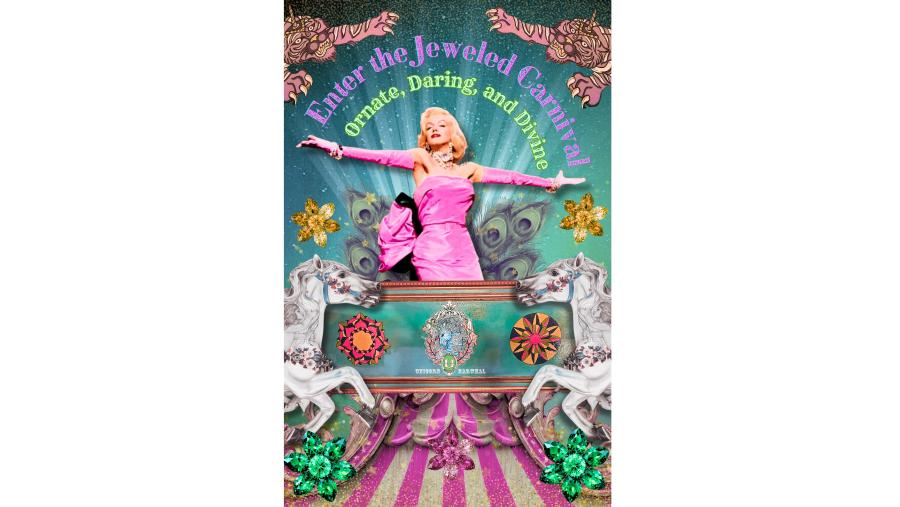
The pastel didn't match the room.
Unicorn's existing visual brand — bright, pastel, carnival-light — no longer matches the moodier, queer-forward, late-night experience the venue actually delivers, and it doesn't stretch far enough to support its growing slate of large events (including Pride).
Seattle's Jeweled Carnival.
Unicorn is a beloved Capitol Hill bar and venue — a French-circus, carnival-themed nightlife institution founded by Adam Heimstadt and Kaileigh Wilson — that has recently grown its patronage through stronger partnerships with the queer community.
The project elevates Unicorn's existing assets — ornate architecture, daring arts programming, divine culture of self-expression, and signature food service — into a visual system that can represent the venue as "Seattle's Jeweled Carnival" and stretch to support new event needs, including the Pride Block Party promotional campaign.
Who it's for.
- People 21–35 who like going out on the town, novelty aesthetics, comedy, cabaret, and experimental or alternative performances.
- Young adults who are legally able to drink (21+).
- People who enjoy bars, social drinking, and late-night entertainment in Seattle.
- Queer community, 30–50-year-old event attendees who treat Unicorn as a home venue.
- People looking for entertainment, events, and community — locals and visitors curious about Capitol Hill's nightlife.
Insight
Finding the moody tones of ombre and overlapping texture was the key to brand consistency. The intersection of ornate, daring, and divine couldn't simply be visually paired — those traits needed to be interacting to accurately represent the dynamic, layered nature of the bar.
spending time inside the space, I saw that the existing visual brand leaned bright and pastel, but the felt experience of Unicorn at night is saturated, mysterious, and theatrical. Pulling the brand toward that nighttime reality — without losing the carnival joy — became the project's organizing principle.
Three trait pillars.
Ornate, Daring, Divine. Every visual application had to hit at least two — and great applications hit all three at once.
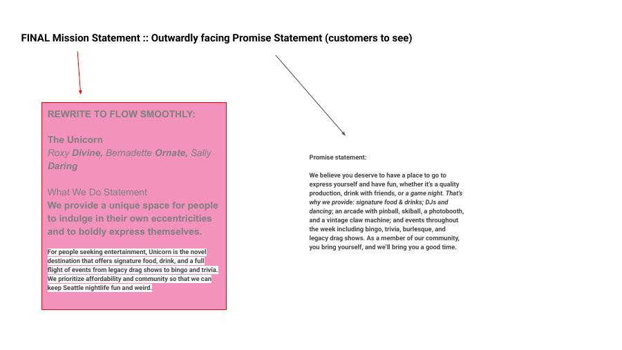
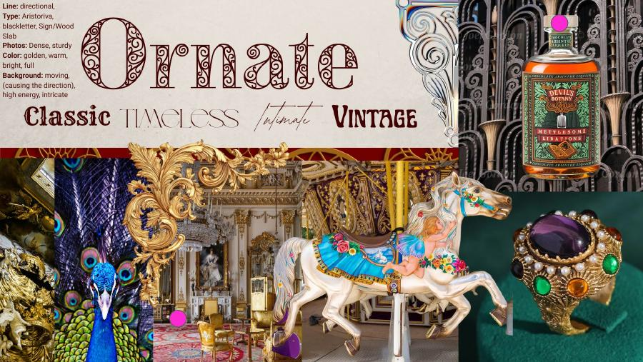
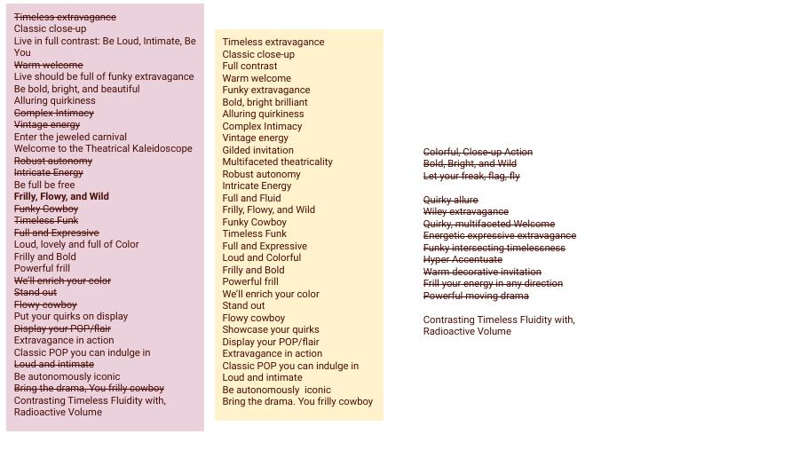
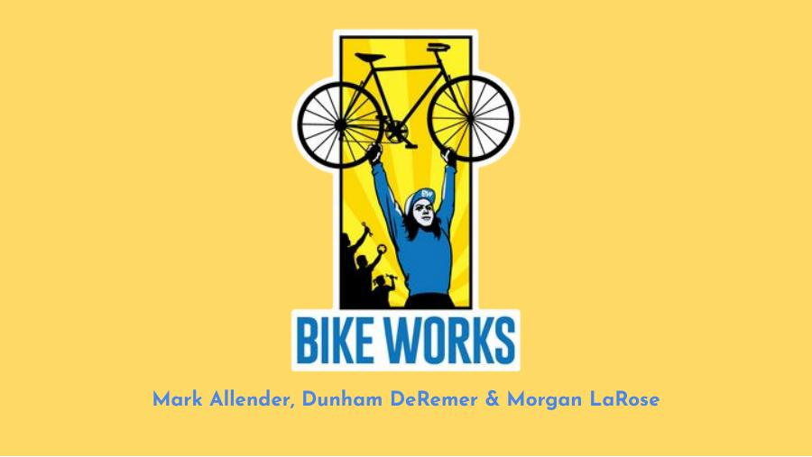
Color palette — moody ombré
Deep, layered, theatrical — sampled from final brand applications. Ah ha: consistency is the ombré.
Unicorn Pride Block Party 2026.
The brand system extended into a 17-frame Instagram Story campaign and main top circle artwork — arched circus-style wordmark, ombre color treatments, event signage, and social templates.
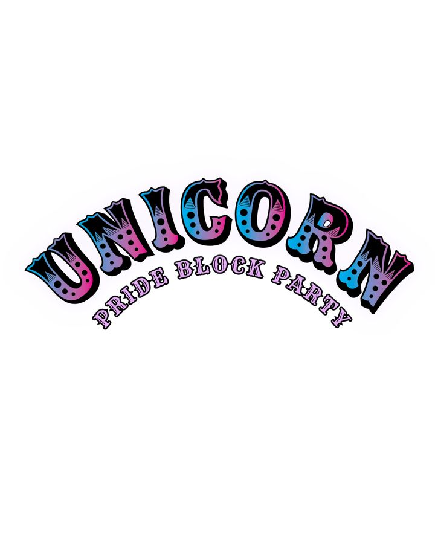
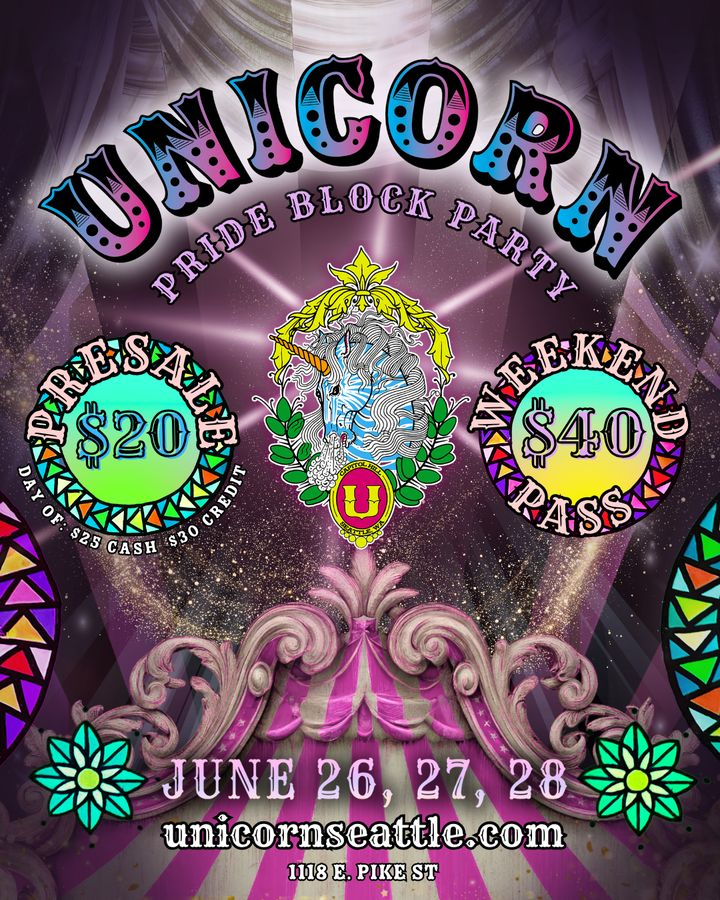
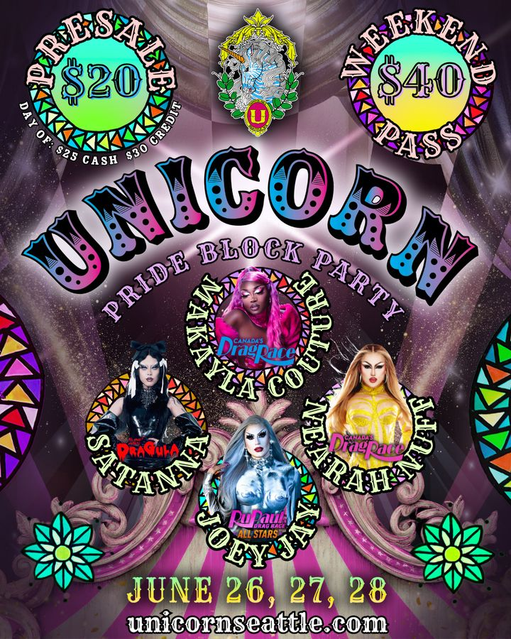
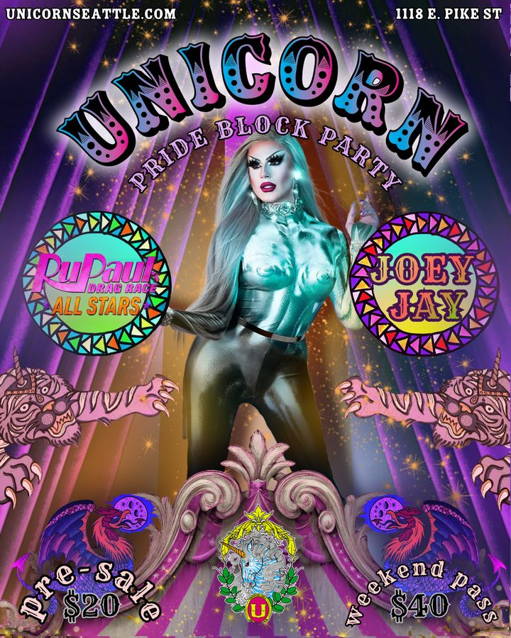
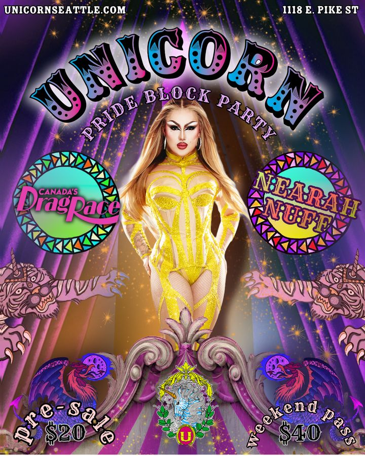
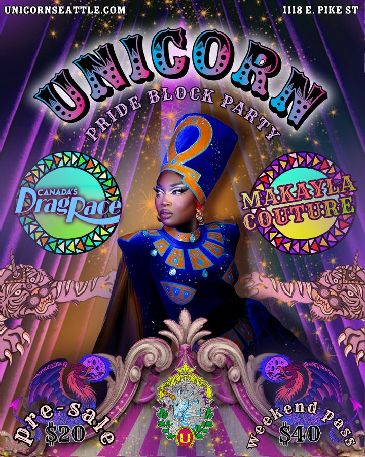
Refocus on the art at the heart of Unicorn.
Build a dynamic brand system that refocuses attention on the art at the heart of Unicorn while embedding it in deeper, more expressive moods that match its entertainment and nightlife mission.
Working with Emma Pontrello, we excavated the intricate, mysterious, and bold art that lives at the true center of Unicorn's brand. I integrated those elements into an explosion of moody carnival aesthetics — applied across logo, color, photography direction, and a brand book — and then extended the system into the Unicorn Pride Block Party promotional campaign: arched circus-style wordmark, ombre color treatments, Instagram Story templates, and event signage.
The result is a brand that still feels unmistakably like Unicorn but can now carry larger, queer-forward events without losing visual coherence.
View full brand presentation (PDF, 43 MB) ↗